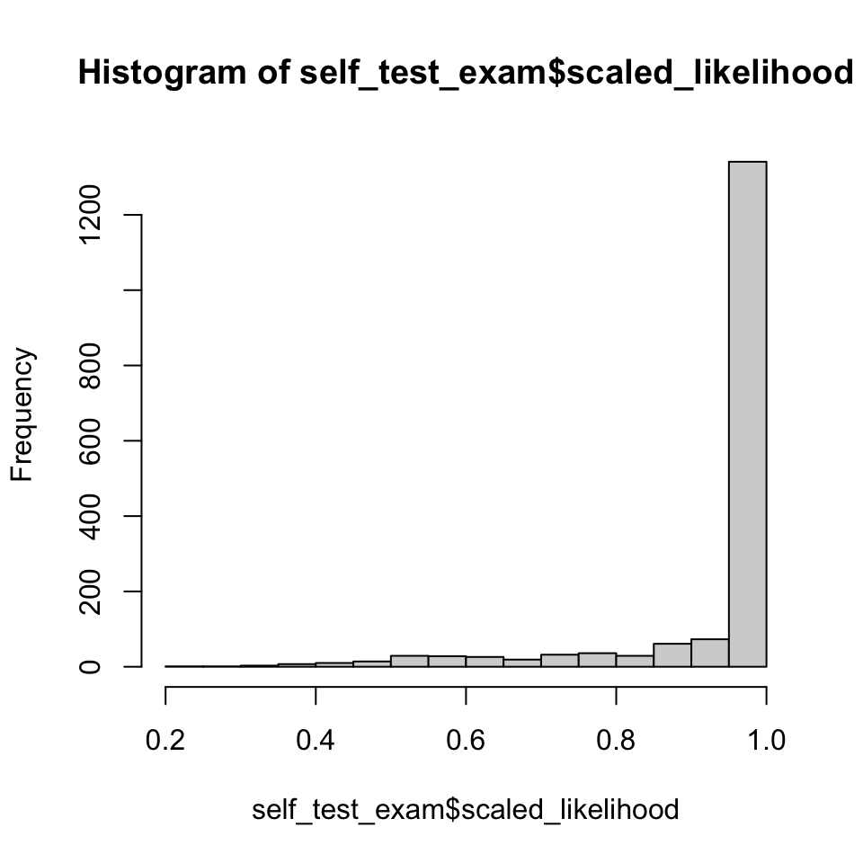
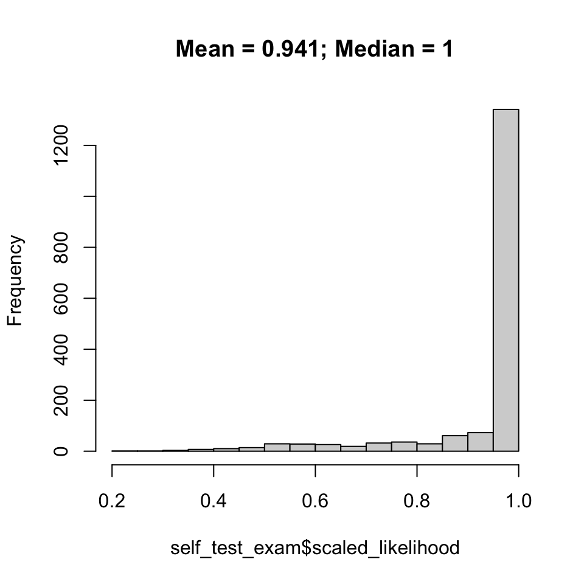
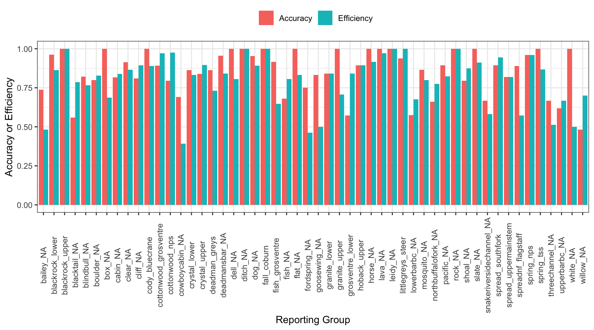
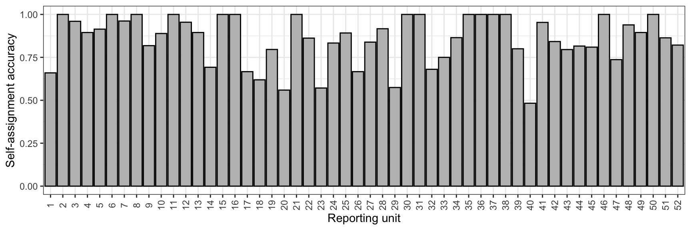
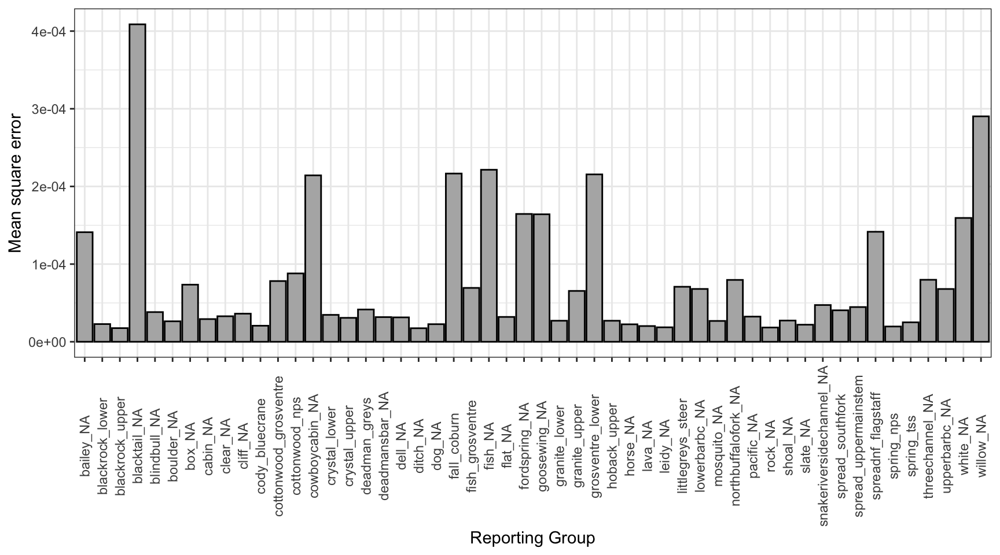
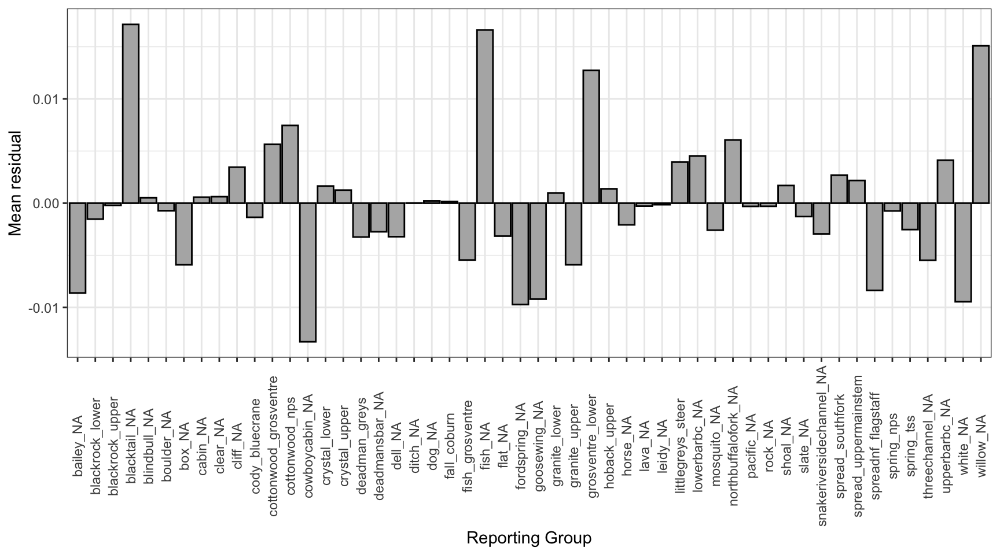
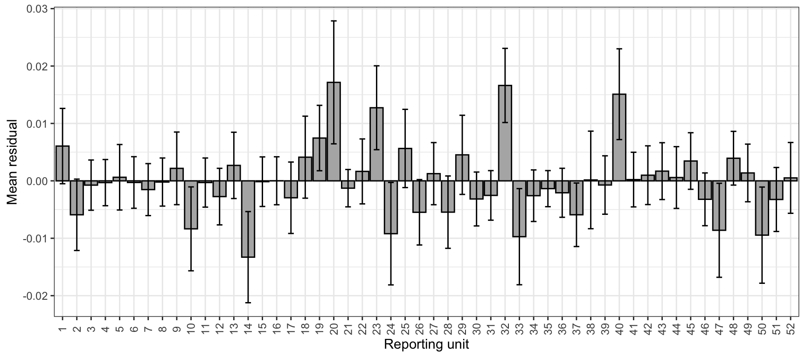
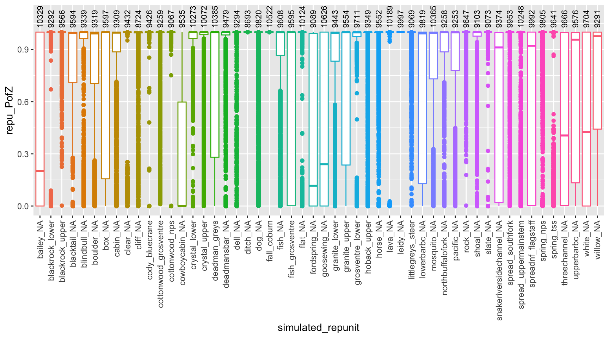
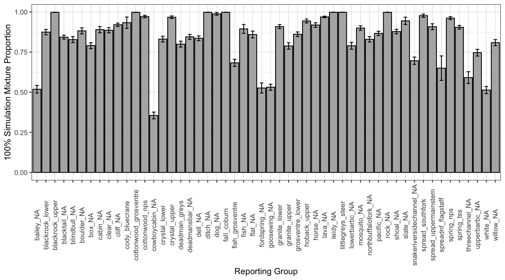

Purpose: test baseline reporting groups for accuracy and efficiency using 100% simulations, self-assignment tests, and simulated mixtures. up
3.1 Data
Load raw genotype data, sibling IDs to drop (full siblings), and gps locations (to sort)
Code
data<-read_csv("/Users/jeffbaldock/Library/CloudStorage/GoogleDrive-jbaldock@uwyo.edu/Shared drives/wyo-coop-baldock/UWyoming/Snake River Cutthroat/Analyses/Snake River GSI Quarto/usr_gsi_gtseq_plusmeta.csv")drop_sibs<-read_csv("/Users/jeffbaldock/Library/CloudStorage/GoogleDrive-jbaldock@uwyo.edu/Shared drives/wyo-coop-baldock/UWyoming/Snake River Cutthroat/Analyses/Snake River GSI Quarto/Baseline Relatedness/UpperSnakeRiver_GTseq_Baseline_DropFullSiblings.csv")gps<-read_csv("/Users/jeffbaldock/Library/CloudStorage/GoogleDrive-jbaldock@uwyo.edu/Shared drives/wyo-coop-baldock/UWyoming/Snake River Cutthroat/Analyses/Snake River GSI Quarto/Landscape Covariates/RepUnit_LatLong.csv")gps_sp<-sf::st_as_sf(gps, coords =c("lon", "lat"), crs =4326)mapview::mapview(gps_sp, col.regions ="blue", legend =FALSE)
3.1.1 Format data
Code
gt_mat<-data[,-c(1:3)]# pull out sequence datagt_mat[gt_mat==0]<-NA# change the missing data to NA# ID rows corresponding to baseline vs mixture samplesref_indv<-which(data$Category=="baseline")mix_indv<-which(data$Category=="mixture")# create data for sample_type column sample_type<-rep("reference", nrow(data))sample_type[mix_indv]<-"mixture"# create data for reporting unit columnrepunit<-data$Poprepunit[mix_indv]<-NA# create data for collection column (same as reporting unit, except for mixture samples)collection<-data$Pop# IDFG EFGL sample IDindiv<-data$SampNumber# combine into singe data frameinput_data<-tibble(sample_type, repunit, collection, indiv)all_input<-bind_cols(input_data, gt_mat)# ensure that baseline individuals that are likely BKT are not included (4 from NF Spread Ck and 1 from Upper Mainstem Spread Ck)all_input<-all_input%>%filter(!indiv%in%c("OclVARI23G_0013", "OclVARI23G_0012", "OclVARI23G_0010", "OclVARI23G_0011", "OclVARI23G_0099"))
3.1.2 Filter data
Drop putative “mixture” reporting groups
snake_murieranch collection from ~ 2km downstream of UBBC/Blacktail…preliminary self-assignment tests show these samples assign to those streams
lake_na collection from upper lake creek…preliminary self-assignment tests show these samples assign to UBBC, Blacktail, and Cottonwood.
Which makes sense as pretty much all flow at this location derives from Granite Diversion Ditch, which pulls water from just downstream of Moose.
Additionally, spawning and rearing capacity is likely very limited in this system as flow is all but turned off by late summer/early fall after irrigation season.
# write outwrite_csv(all_input, "/Users/jeffbaldock/Library/CloudStorage/GoogleDrive-jbaldock@uwyo.edu/Shared drives/wyo-coop-baldock/UWyoming/Snake River Cutthroat/Analyses/Snake River GSI Quarto/Baseline Testing/UpperSnakeRiver_GTseq_InputData_NoSibs.csv")all_input<-read_csv("/Users/jeffbaldock/Library/CloudStorage/GoogleDrive-jbaldock@uwyo.edu/Shared drives/wyo-coop-baldock/UWyoming/Snake River Cutthroat/Analyses/Snake River GSI Quarto/Baseline Testing/UpperSnakeRiver_GTseq_InputData_NoSibs.csv")
3.2 Define reporting units
Drop and redefine reporting units based on sample size, geographic proximity, and low genetic differentiation among proximate populations.
First, identify and combine reporting groups with low sample sizes.
Code
all_input%>%filter(!is.na(repunit))%>%group_by(repunit)%>%summarise(ct =n())%>%ungroup()%>%reactable()%>%add_title("Raw, unaltered reporting unit (population) sample sizes.")
Raw, unaltered reporting unit (population) sample sizes.
Redefine reporting groups for groups with ~low sample size AND low self-assignment rates calculated from raw data OR collections from different locations within the same stream.
After running 2nd round of self-assignment tests, drop the groupings that led to reduced self-assignment rates relative to Will’s original work treating collections as reporting groups
Code
all_input$repunit[which(all_input$repunit=="bluecrane_ford")]<-"cody_bluecrane"all_input$repunit[which(all_input$repunit=="cody_moment")]<-"cody_bluecrane"all_input$repunit[which(all_input$repunit=="cowboycabin_springchannels")]<-"cowboycabin_NA"all_input$repunit[which(all_input$repunit=="threechannel_eastfork")]<-"threechannel_NA"all_input$repunit[which(all_input$repunit=="threechannel_westfork")]<-"threechannel_NA"all_input$repunit[which(all_input$repunit=="fish_lower")]<-"fish_NA"all_input$repunit[which(all_input$repunit=="fish_upper")]<-"fish_NA"all_input$repunit[which(all_input$repunit=="slate_lower")]<-"slate_NA"all_input$repunit[which(all_input$repunit=="slate_upper")]<-"slate_NA"all_input$repunit[which(all_input$repunit=="spread_northfork")]<-"spreadnf_flagstaff"all_input$repunit[which(all_input$repunit=="flagstaff_NA")]<-"spreadnf_flagstaff"all_input$repunit[which(all_input$repunit=="fall_upper")]<-"fall_coburn"all_input$repunit[which(all_input$repunit=="fall_lower")]<-"fall_coburn"all_input$repunit[which(all_input$repunit=="coburn_NA")]<-"fall_coburn"all_input$repunit[which(all_input$repunit=="littlegreys_lower")]<-"littlegreys_steer"all_input$repunit[which(all_input$repunit=="littlegreys_upper")]<-"littlegreys_steer"all_input$repunit[which(all_input$repunit=="steer_NA")]<-"littlegreys_steer"all_input$repunit[which(all_input$repunit=="pacific_lower")]<-"pacific_NA"all_input$repunit[which(all_input$repunit=="pacific_upper")]<-"pacific_NA"# drop reporting groups that cannot be easily combinedall_input<-all_input%>%filter(!repunit%in%c("schwabacher_NA", "southbuffalofork_NA", "jack_NA", "bacon_NA", "bear_NA", "sheep_NA"))
Code
all_input%>%group_by(repunit)%>%summarise(ct =n())%>%ungroup()%>%reactable()%>%add_title("Final/combined reporting unit (population) sample sizes.")
Final/combined reporting unit (population) sample sizes.
Write out cleaned data
Code
write_csv(all_input, "/Users/jeffbaldock/Library/CloudStorage/GoogleDrive-jbaldock@uwyo.edu/Shared drives/wyo-coop-baldock/UWyoming/Snake River Cutthroat/Analyses/Snake River GSI Quarto/Baseline Testing/UpperSnakeRiver_GTseq_InputData_NoSibs_clean.csv")all_input<-read_csv("/Users/jeffbaldock/Library/CloudStorage/GoogleDrive-jbaldock@uwyo.edu/Shared drives/wyo-coop-baldock/UWyoming/Snake River Cutthroat/Analyses/Snake River GSI Quarto/Baseline Testing/UpperSnakeRiver_GTseq_InputData_NoSibs_clean.csv")
3.3 Delineate sample type
Separate reference and mixture samples
Code
ref_input<-all_input[which(all_input$sample_type=="reference"),]mix_input<-all_input[which(all_input$sample_type=="mixture"),]ref_input<-ref_input%>%mutate_if(is.double, as.integer)# make sure everything is an intergermix_input<-mix_input%>%mutate_if(is.double, as.integer)# make sure everything is an interger# view reporting unitsunique(ref_input$repunit)
Write out and read in reference and mixture data files
Code
write_csv(ref_input, "/Users/jeffbaldock/Library/CloudStorage/GoogleDrive-jbaldock@uwyo.edu/Shared drives/wyo-coop-baldock/UWyoming/Snake River Cutthroat/Analyses/Snake River GSI Quarto/Baseline Testing/UpperSnakeRiver_GTseq_InputData_NoSibs_clean_baseline.csv")write_csv(mix_input, "/Users/jeffbaldock/Library/CloudStorage/GoogleDrive-jbaldock@uwyo.edu/Shared drives/wyo-coop-baldock/UWyoming/Snake River Cutthroat/Analyses/Snake River GSI Quarto/Baseline Testing/UpperSnakeRiver_GTseq_InputData_NoSibs_clean_mixture.csv")ref_input<-read_csv("/Users/jeffbaldock/Library/CloudStorage/GoogleDrive-jbaldock@uwyo.edu/Shared drives/wyo-coop-baldock/UWyoming/Snake River Cutthroat/Analyses/Snake River GSI Quarto/Baseline Testing/UpperSnakeRiver_GTseq_InputData_NoSibs_clean_baseline.csv")mix_input<-read_csv("/Users/jeffbaldock/Library/CloudStorage/GoogleDrive-jbaldock@uwyo.edu/Shared drives/wyo-coop-baldock/UWyoming/Snake River Cutthroat/Analyses/Snake River GSI Quarto/Baseline Testing/UpperSnakeRiver_GTseq_InputData_NoSibs_clean_mixture.csv")ref_input<-ref_input%>%mutate_if(is.double, as.integer)# make sure everything is an intergermix_input<-mix_input%>%mutate_if(is.double, as.integer)# make sure everything is an interger
3.4 Self-assignment tests
3.4.1 Run self-assignment
Run the self-assignment tests and summarize results by individual, saving only the most likely inferred rep unit:
Z-scores provide an indication of the likelihood that an individual belongs to a reporting group other than that to which it was assigned. Because we are performing self-assignment tests, we would not expect to see any major outliers.
Do individuals generally assign to their source reporting unit with high assignment likelihood? Expectation is the mean/median should be near 1, anything much lower would be cause for concern.
Code
# Distribution of assignment likelihood#| fig-cap: "Distribution of indvidual assignment likelihoods."p1<-hist(self_test_exam$scaled_likelihood)# probability of assignment to a single reporting group is very high for nearly all individuals

Code
plot(p1, main =paste(paste("Mean = ", round(mean(self_test_exam$scaled_likelihood), digits =3), "; Median = ", round(median(self_test_exam$scaled_likelihood), digits =3), sep ="")))

3.4.4 Accuracy and efficiency
Inspect self-assignment accuracy and efficiency by reporting group.
Efficiency: the number of individuals known to belong to a reporting group which were recovered from the mixture.
Accuracy: the proportion of individuals correctly assigned to a reporting group
First, summarize results by reporting group:
Code
# summarize results by reporting groupref_pops<-unique(self_test_exam$repunit)prop_assigned_acc<-rep(NA, length(ref_pops))prop_assigned_eff<-rep(NA, length(ref_pops))sampsize<-rep(NA, length(ref_pops))selfassprop<-tibble(ref_pops, prop_assigned_acc, prop_assigned_eff, sampsize)for(iin1:dim(selfassprop)[1]){corass<-self_test_exam[which(self_test_exam$repunit==ref_pops[i]),]# fish known to be from a given reporting unittotass<-self_test_exam[which(self_test_exam$inferred_repunit==ref_pops[i]),]# fish assigned to a given reporting unitselfassprop$prop_assigned_eff[i]<-length(which(corass$repunit==corass$inferred_repunit))/nrow(corass)# Efficiency - the number of individuals known to belong to a reporting group which were recovered from the mixtureselfassprop$prop_assigned_acc[i]<-length(which(totass$repunit==totass$inferred_repunit))/nrow(totass)# Accuracy - the proportion of individuals correctly assigned to a reporting groupselfassprop$sampsize[i]<-nrow(corass)}# add coordinates for sortingselfassprop<-selfassprop%>%left_join(gps, by =join_by(ref_pops==repunit))
How does reporting group accuracy and efficiency scale with sample size? Generally positively, but relationships with sample size are weak. I.e., even reporting groups with small sample sizes have relatively high accuracy/efficiency and thus low acc/eff are likely not a function of sample size.
selfassprop_gather<-selfassprop%>%gather(type, value, prop_assigned_acc:prop_assigned_eff)selfassprop_gather%>%ggplot()+geom_bar(aes(x =ref_pops, y =value, fill =type), stat ="identity", position ="dodge")+xlab("Reporting Group")+ylab("Accuracy or Efficiency")+theme_bw()+theme(axis.text.x =element_text(angle =90, vjust =0.5), legend.position ="top")+scale_fill_discrete(name ="", labels =c("Accuracy", "Efficiency"))

Reproduce the plot above, but only show accuracy and use numbered reporting groups, by latitude (for supplementary materials).
Code
selfassprop%>%ggplot()+geom_bar(aes(x =reorder(ref_pops, -lat), y =prop_assigned_acc), stat ="identity", position ="dodge", color ="black", fill ="grey")+xlab("Reporting unit")+ylab("Self-assignment accuracy")+theme_bw()+theme(axis.text.x =element_text(angle =90, vjust =0.5), legend.position ="top")+scale_x_discrete(labels =c(1:52))

Write-out self-assignment test results
Code
write_csv(self_test_exam[,c(1:10)], file ="/Users/jeffbaldock/Library/CloudStorage/GoogleDrive-jbaldock@uwyo.edu/Shared drives/wyo-coop-baldock/UWyoming/Snake River Cutthroat/Analyses/Snake River GSI Quarto/Baseline Testing/Self Assignment/self_assign_results_individuals.csv")write_csv(selfassprop, file ="/Users/jeffbaldock/Library/CloudStorage/GoogleDrive-jbaldock@uwyo.edu/Shared drives/wyo-coop-baldock/UWyoming/Snake River Cutthroat/Analyses/Snake River GSI Quarto/Baseline Testing/Self Assignment/self_assign_results_repgroups.csv")
3.4.5 Confusion matrix
Construct self-assignment confusion matrix: to which reporting units are individuals of known-origin being (mistakenly) assigned?
Code
conf_mat<-matrix(data =NA, nrow =length(unique(self_test_exam$repunit)), ncol =length(unique(self_test_exam$repunit)))rownames(conf_mat)<-selfassprop$ref_popscolnames(conf_mat)<-selfassprop$ref_popsfor(iin1:nrow(conf_mat)){for(jin1:ncol(conf_mat)){conf_mat[i,j]<-length(which(self_test_exam$repunit==rownames(conf_mat)[i]&self_test_exam$inferred_repunit==colnames(conf_mat)[j]))/length(which(self_test_exam$repunit==rownames(conf_mat)[i]))}}# check confusion matrix -- all rows should add to 1# check <- apply(conf_mat, 1, sum)# table(check == 1)reactable(round(conf_mat, digits =3))
Write out confusion matrix
Code
write.csv(conf_mat, file ="/Users/jeffbaldock/Library/CloudStorage/GoogleDrive-jbaldock@uwyo.edu/Shared drives/wyo-coop-baldock/UWyoming/Snake River Cutthroat/Analyses/Snake River GSI Quarto/Baseline Testing/Self Assignment/self_assign_confusion_matrix.csv", row.names =T, quote =F)
3.5 Simulated mixtures
Evaluate accuracy given our set of SNP markers and the grouping of collections into reporting groups
3.5.1 Run simulations
First, simulate mixtures and assign to reporting groups
Code
# usr_sims <- assess_reference_loo(reference = ref_input, gen_start_col = 5, reps = 500, mixsize = 1000, return_indiv_posteriors = TRUE)# write_rds(usr_sims, "/Users/jeffbaldock/Library/CloudStorage/GoogleDrive-jbaldock@uwyo.edu/Shared drives/wyo-coop-baldock/UWyoming/Snake River Cutthroat/Analyses/Snake River GSI Quarto/Baseline Testing/Simulated Mixtures/sim_mix.rds")usr_sims<-read_rds("/Users/jeffbaldock/Library/CloudStorage/GoogleDrive-jbaldock@uwyo.edu/Shared drives/wyo-coop-baldock/UWyoming/Snake River Cutthroat/Analyses/Snake River GSI Quarto/Baseline Testing/Simulated Mixtures/sim_mix.rds")
tmp0%>%ggplot()+geom_bar(aes(x =repunit, y =mse), stat ="identity", fill ="grey70", color ="black")+xlab("Reporting Group")+ylab("Mean square error")+theme_bw()+theme(axis.text.x =element_text(angle =90, vjust =0.5))

Mean residual by reporting group
Code
tmp0%>%ggplot()+geom_bar(aes(x =repunit, y =mr), stat ="identity", fill ="grey70", color ="black")+xlab("Reporting Group")+ylab("Mean residual")+theme_bw()+theme(axis.text.x =element_text(angle =90, vjust =0.5))

Mean residual by reporting group (same as above), but numbered reporting groups with standard deviations
Code
tmp0%>%ggplot(aes(x =reorder(repunit, -lat), y =mr))+geom_bar(stat ="identity", fill ="grey70", color ="black")+xlab("Reporting unit")+ylab("Mean residual")+theme_bw()+theme(axis.text.x =element_text(angle =90, vjust =0.5))+scale_x_discrete(labels =c(1:52))+geom_errorbar(aes(ymin =mr-mr.sd, ymax =mr+mr.sd), width =0.4)

Plot estimated proportional contribution against true contribution for simulated mixtures for each reporting group:
Can we true the posteriors from individual fish? Plot distributions of z-scores by reporting group, over all simulations
Code
# first summarize by reporting unitrepu_pofzs<-usr_sims$indiv_posteriors%>%filter(repunit==simulated_repunit)%>%group_by(iter, indiv, simulated_repunit, repunit)%>%# first aggregate over reporting unitssummarise(repu_PofZ =sum(PofZ))%>%ungroup()%>%arrange(repunit, simulated_repunit)%>%mutate(simulated_repunit =factor(simulated_repunit, levels =unique(simulated_repunit)))# also get the number of simulated individuals from each collectionnum_simmed<-usr_sims$indiv_posteriors%>%group_by(iter, indiv)%>%slice(1)%>%ungroup()%>%count(simulated_repunit)# now, plot itggplot(repu_pofzs, aes(x =simulated_repunit, y =repu_PofZ))+geom_boxplot(aes(colour =repunit))+geom_text(data =num_simmed, mapping =aes(y =1.025, label =n), angle =90, hjust =0, vjust =0.5, size =3)+theme(axis.text.x =element_text(angle =90, hjust =1, size =9, vjust =0.5))+ylim(c(NA, 1.1))+guides(colour =FALSE)

3.6 100% Simulations
As noted elsewhere, 100% simulations are used less frequently than in the past as assumptions are unrealistic (i.e., assume mixtures only made up of individuals from a single reporting group). However, we perform them here as they provide another diagnostic tool to assess the performance of our baseline.
Run the simulations and write output to file. 20 simulations per reporting group.
Code
# # create list specifying 100% mixtures# hundy_scenarios <- lapply(unique(all_input$repunit)[!is.na(unique(all_input$repunit))], function(x) tibble(repunit = x, ppn = 1.0))# names(hundy_scenarios) <- paste("All", unique(all_input$repunit)[!is.na(unique(all_input$repunit))], sep = "-")# # # run the 100% simulations# repu_hundy_results <- assess_reference_loo(reference = ref_input, gen_start_col = 5, reps = 20, mixsize = 500, alpha_repunit = hundy_scenarios)# repu_hundy_results <- repu_hundy_results %>% mutate(repunit_true = substr(repunit_scenario, 5, 30))# repu_hundy_results_sum <- repu_hundy_results %>% filter(repunit_true == repunit) %>% group_by(iter, repunit, repunit_true) %>% summarize(post_ppn = sum(post_mean_pi))# repu_hundy_results_sum2 <- repu_hundy_results_sum %>% group_by(repunit_true) %>% summarize(post_ppn_mean = mean(post_ppn), post_ppn_sd = sd(post_ppn))# mean(repu_hundy_results_sum2$post_ppn_mean)# # write_csv(repu_hundy_results, "/Users/jeffbaldock/Library/CloudStorage/GoogleDrive-jbaldock@uwyo.edu/Shared drives/wyo-coop-baldock/UWyoming/Snake River Cutthroat/Analyses/Snake River GSI Quarto/Baseline Testing/Hundred Perc Sims/sim_mix_100perc_results_raw.csv")# write_csv(repu_hundy_results_sum2, "/Users/jeffbaldock/Library/CloudStorage/GoogleDrive-jbaldock@uwyo.edu/Shared drives/wyo-coop-baldock/UWyoming/Snake River Cutthroat/Analyses/Snake River GSI Quarto/Baseline Testing/Hundred Perc Sims/sim_mix_100perc_results_summarized.csv")repu_hundy_results_sum2<-read_csv("/Users/jeffbaldock/Library/CloudStorage/GoogleDrive-jbaldock@uwyo.edu/Shared drives/wyo-coop-baldock/UWyoming/Snake River Cutthroat/Analyses/Snake River GSI Quarto/Baseline Testing/Hundred Perc Sims/sim_mix_100perc_results_summarized.csv")
Plot the results (mean and standard deviation per reporting group). Should be near 100%.
Code
repu_hundy_results_sum2%>%ggplot()+geom_bar(aes(x =repunit_true, y =post_ppn_mean), stat ="identity", fill ="grey70", color ="black")+geom_errorbar(aes(x =repunit_true, ymin =post_ppn_mean-post_ppn_sd, ymax =post_ppn_mean+post_ppn_sd), width =0.4, color ="black")+xlab("Reporting Group")+ylab("100% Simulation Mixture Proportion")+theme_bw()+theme(axis.text.x =element_text(angle =90, vjust =0.5))

Source Code
# Baseline TestingPurpose: test baseline reporting groups for accuracy and efficiency using 100% simulations, self-assignment tests, and simulated mixtures. up```{r echo=FALSE}library(rubias)library(tidyverse)library(knitr)library(ggforce)library(reactable)library(reactablefmtr)```## DataLoad raw genotype data, sibling IDs to drop (full siblings), and gps locations (to sort)```{r}data <-read_csv("/Users/jeffbaldock/Library/CloudStorage/GoogleDrive-jbaldock@uwyo.edu/Shared drives/wyo-coop-baldock/UWyoming/Snake River Cutthroat/Analyses/Snake River GSI Quarto/usr_gsi_gtseq_plusmeta.csv")drop_sibs <-read_csv("/Users/jeffbaldock/Library/CloudStorage/GoogleDrive-jbaldock@uwyo.edu/Shared drives/wyo-coop-baldock/UWyoming/Snake River Cutthroat/Analyses/Snake River GSI Quarto/Baseline Relatedness/UpperSnakeRiver_GTseq_Baseline_DropFullSiblings.csv")gps <-read_csv("/Users/jeffbaldock/Library/CloudStorage/GoogleDrive-jbaldock@uwyo.edu/Shared drives/wyo-coop-baldock/UWyoming/Snake River Cutthroat/Analyses/Snake River GSI Quarto/Landscape Covariates/RepUnit_LatLong.csv")gps_sp <- sf::st_as_sf(gps, coords =c("lon", "lat"), crs =4326)mapview::mapview(gps_sp, col.regions ="blue", legend =FALSE)```### Format data```{r}gt_mat <- data[,-c(1:3)] # pull out sequence datagt_mat[gt_mat ==0] <-NA# change the missing data to NA# ID rows corresponding to baseline vs mixture samplesref_indv <-which(data$Category =="baseline") mix_indv <-which(data$Category =="mixture") # create data for sample_type column sample_type <-rep("reference", nrow(data))sample_type[mix_indv] <-"mixture"# create data for reporting unit columnrepunit <- data$Poprepunit[mix_indv] <-NA# create data for collection column (same as reporting unit, except for mixture samples)collection <- data$Pop# IDFG EFGL sample IDindiv <- data$SampNumber# combine into singe data frameinput_data <-tibble(sample_type, repunit, collection, indiv)all_input <-bind_cols(input_data, gt_mat)# ensure that baseline individuals that are likely BKT are not included (4 from NF Spread Ck and 1 from Upper Mainstem Spread Ck)all_input <- all_input %>%filter(!indiv %in%c("OclVARI23G_0013", "OclVARI23G_0012", "OclVARI23G_0010", "OclVARI23G_0011", "OclVARI23G_0099"))```### Filter dataDrop putative "mixture" reporting groups* snake_murieranch collection from ~ 2km downstream of UBBC/Blacktail...preliminary self-assignment tests show these samples assign to those streams* lake_na collection from upper lake creek...preliminary self-assignment tests show these samples assign to UBBC, Blacktail, and Cottonwood. + Which makes sense as pretty much all flow at this location derives from Granite Diversion Ditch, which pulls water from just downstream of Moose. + Additionally, spawning and rearing capacity is likely very limited in this system as flow is all but turned off by late summer/early fall after irrigation season. ```{r}all_input <- all_input %>%filter(!repunit %in%c("snake_murieranch", "lake_NA"))unique(all_input$repunit)```Drop big sibling groups (see BaselineRelatedness.R): retain 2 full siblings per family per Ostergren et al. (2020) Molecular Ecology Resources```{r}all_input <- all_input %>%filter(!indiv %in% drop_sibs$drop_sibs)```Write out data files```{r}# write outwrite_csv(all_input, "/Users/jeffbaldock/Library/CloudStorage/GoogleDrive-jbaldock@uwyo.edu/Shared drives/wyo-coop-baldock/UWyoming/Snake River Cutthroat/Analyses/Snake River GSI Quarto/Baseline Testing/UpperSnakeRiver_GTseq_InputData_NoSibs.csv")all_input <-read_csv("/Users/jeffbaldock/Library/CloudStorage/GoogleDrive-jbaldock@uwyo.edu/Shared drives/wyo-coop-baldock/UWyoming/Snake River Cutthroat/Analyses/Snake River GSI Quarto/Baseline Testing/UpperSnakeRiver_GTseq_InputData_NoSibs.csv")```## Define reporting unitsDrop and redefine reporting units based on sample size, geographic proximity, and low genetic differentiation among proximate populations.First, identify and combine reporting groups with low sample sizes.```{r}all_input %>%filter(!is.na(repunit)) %>%group_by(repunit) %>%summarise(ct =n()) %>%ungroup() %>%reactable() %>%add_title("Raw, unaltered reporting unit (population) sample sizes.")```Redefine reporting groups for groups with ~low sample size AND low self-assignment rates calculated from raw data OR collections from different locations within the same stream. After running 2nd round of self-assignment tests, drop the groupings that led to reduced self-assignment rates relative to Will's original work treating collections as reporting groups```{r}all_input$repunit[which(all_input$repunit =="bluecrane_ford")] <-"cody_bluecrane"all_input$repunit[which(all_input$repunit =="cody_moment")] <-"cody_bluecrane"all_input$repunit[which(all_input$repunit =="cowboycabin_springchannels")] <-"cowboycabin_NA"all_input$repunit[which(all_input$repunit =="threechannel_eastfork")] <-"threechannel_NA"all_input$repunit[which(all_input$repunit =="threechannel_westfork")] <-"threechannel_NA"all_input$repunit[which(all_input$repunit =="fish_lower")] <-"fish_NA"all_input$repunit[which(all_input$repunit =="fish_upper")] <-"fish_NA"all_input$repunit[which(all_input$repunit =="slate_lower")] <-"slate_NA"all_input$repunit[which(all_input$repunit =="slate_upper")] <-"slate_NA"all_input$repunit[which(all_input$repunit =="spread_northfork")] <-"spreadnf_flagstaff"all_input$repunit[which(all_input$repunit =="flagstaff_NA")] <-"spreadnf_flagstaff"all_input$repunit[which(all_input$repunit =="fall_upper")] <-"fall_coburn"all_input$repunit[which(all_input$repunit =="fall_lower")] <-"fall_coburn"all_input$repunit[which(all_input$repunit =="coburn_NA")] <-"fall_coburn"all_input$repunit[which(all_input$repunit =="littlegreys_lower")] <-"littlegreys_steer"all_input$repunit[which(all_input$repunit =="littlegreys_upper")] <-"littlegreys_steer"all_input$repunit[which(all_input$repunit =="steer_NA")] <-"littlegreys_steer"all_input$repunit[which(all_input$repunit =="pacific_lower")] <-"pacific_NA"all_input$repunit[which(all_input$repunit =="pacific_upper")] <-"pacific_NA"# drop reporting groups that cannot be easily combinedall_input <- all_input %>%filter(!repunit %in%c("schwabacher_NA", "southbuffalofork_NA", "jack_NA", "bacon_NA", "bear_NA", "sheep_NA"))``````{r}all_input %>%group_by(repunit) %>%summarise(ct =n()) %>%ungroup() %>%reactable() %>%add_title("Final/combined reporting unit (population) sample sizes.")```Write out cleaned data```{r}write_csv(all_input, "/Users/jeffbaldock/Library/CloudStorage/GoogleDrive-jbaldock@uwyo.edu/Shared drives/wyo-coop-baldock/UWyoming/Snake River Cutthroat/Analyses/Snake River GSI Quarto/Baseline Testing/UpperSnakeRiver_GTseq_InputData_NoSibs_clean.csv")all_input <-read_csv("/Users/jeffbaldock/Library/CloudStorage/GoogleDrive-jbaldock@uwyo.edu/Shared drives/wyo-coop-baldock/UWyoming/Snake River Cutthroat/Analyses/Snake River GSI Quarto/Baseline Testing/UpperSnakeRiver_GTseq_InputData_NoSibs_clean.csv")```## Delineate sample typeSeparate reference and mixture samples```{r}ref_input <- all_input[which(all_input$sample_type =="reference"),]mix_input <- all_input[which(all_input$sample_type =="mixture"),]ref_input <- ref_input %>%mutate_if(is.double, as.integer) # make sure everything is an intergermix_input <- mix_input %>%mutate_if(is.double, as.integer) # make sure everything is an interger# view reporting unitsunique(ref_input$repunit)```Write out and read in reference and mixture data files```{r}write_csv(ref_input, "/Users/jeffbaldock/Library/CloudStorage/GoogleDrive-jbaldock@uwyo.edu/Shared drives/wyo-coop-baldock/UWyoming/Snake River Cutthroat/Analyses/Snake River GSI Quarto/Baseline Testing/UpperSnakeRiver_GTseq_InputData_NoSibs_clean_baseline.csv")write_csv(mix_input, "/Users/jeffbaldock/Library/CloudStorage/GoogleDrive-jbaldock@uwyo.edu/Shared drives/wyo-coop-baldock/UWyoming/Snake River Cutthroat/Analyses/Snake River GSI Quarto/Baseline Testing/UpperSnakeRiver_GTseq_InputData_NoSibs_clean_mixture.csv")ref_input <-read_csv("/Users/jeffbaldock/Library/CloudStorage/GoogleDrive-jbaldock@uwyo.edu/Shared drives/wyo-coop-baldock/UWyoming/Snake River Cutthroat/Analyses/Snake River GSI Quarto/Baseline Testing/UpperSnakeRiver_GTseq_InputData_NoSibs_clean_baseline.csv")mix_input <-read_csv("/Users/jeffbaldock/Library/CloudStorage/GoogleDrive-jbaldock@uwyo.edu/Shared drives/wyo-coop-baldock/UWyoming/Snake River Cutthroat/Analyses/Snake River GSI Quarto/Baseline Testing/UpperSnakeRiver_GTseq_InputData_NoSibs_clean_mixture.csv")ref_input <- ref_input %>%mutate_if(is.double, as.integer) # make sure everything is an intergermix_input <- mix_input %>%mutate_if(is.double, as.integer) # make sure everything is an interger```## Self-assignment tests### Run self-assignmentRun the self-assignment tests and summarize results by individual, saving only the most likely inferred rep unit:```{r}self_test <-self_assign(ref_input, 5)self_test_exam <- self_test %>%group_by(indiv) %>%top_n(1, log_likelihood) %>%ungroup()```### Inspect z-scoresZ-scores provide an indication of the likelihood that an individual belongs to a reporting group other than that to which it was assigned. Because we are performing self-assignment tests, we would not expect to see any major outliers. ```{r fig.width = 9, fig.height = 5}#| fig-cap: "Distribution of z-scores by population"p1 <- ggplot(self_test_exam, aes(x = repunit, y = z_score)) + geom_boxplot() + theme(axis.text.x = element_text(angle = 90, vjust = 0.5, hjust = 1))print(p1)``````{r echo=FALSE, message=FALSE, results='hide'}jpeg("/Users/jeffbaldock/Library/CloudStorage/GoogleDrive-jbaldock@uwyo.edu/Shared drives/wyo-coop-baldock/UWyoming/Snake River Cutthroat/Analyses/Snake River GSI Quarto/Baseline Testing/Self Assignment/self_assign_zscore_boxplot.jpg", res = 1000, units = "in", width = 9, height = 5)p1dev.off()```### Self-assignment likelihoodDo individuals generally assign to their source reporting unit with high assignment likelihood? Expectation is the mean/median should be near 1, anything much lower would be cause for concern.```{r fig.width = 5, fig.height = 5}# Distribution of assignment likelihood#| fig-cap: "Distribution of indvidual assignment likelihoods."p1 <- hist(self_test_exam$scaled_likelihood) # probability of assignment to a single reporting group is very high for nearly all individualsplot(p1, main = paste(paste("Mean = ", round(mean(self_test_exam$scaled_likelihood), digits = 3), "; Median = ", round(median(self_test_exam$scaled_likelihood), digits = 3), sep = "")))``````{r echo=FALSE, message=FALSE, results='hide'}jpeg("/Users/jeffbaldock/Library/CloudStorage/GoogleDrive-jbaldock@uwyo.edu/Shared drives/wyo-coop-baldock/UWyoming/Snake River Cutthroat/Analyses/Snake River GSI Quarto/Baseline Testing/Self Assignment/self_assign_likelhood_hist.jpg", res = 1000, units = "in", width = 5, height = 5)plot(p1, main = paste(paste("Mean = ", round(mean(self_test_exam$scaled_likelihood), digits = 3), "; Median = ", round(median(self_test_exam$scaled_likelihood), digits = 3), sep = "")))dev.off()```### Accuracy and efficiencyInspect self-assignment accuracy and efficiency by reporting group.* *Efficiency:* the number of individuals known to belong to a reporting group which were recovered from the mixture.* *Accuracy:* the proportion of individuals correctly assigned to a reporting groupFirst, summarize results by reporting group:```{r}# summarize results by reporting groupref_pops <-unique(self_test_exam$repunit)prop_assigned_acc <-rep(NA, length(ref_pops))prop_assigned_eff <-rep(NA, length(ref_pops))sampsize <-rep(NA, length(ref_pops))selfassprop <-tibble(ref_pops, prop_assigned_acc, prop_assigned_eff, sampsize)for (i in1:dim(selfassprop)[1]) { corass <- self_test_exam[which(self_test_exam$repunit == ref_pops[i]),] # fish known to be from a given reporting unit totass <- self_test_exam[which(self_test_exam$inferred_repunit == ref_pops[i]),] # fish assigned to a given reporting unit selfassprop$prop_assigned_eff[i] <-length(which(corass$repunit == corass$inferred_repunit)) /nrow(corass) # Efficiency - the number of individuals known to belong to a reporting group which were recovered from the mixture selfassprop$prop_assigned_acc[i] <-length(which(totass$repunit == totass$inferred_repunit)) /nrow(totass) # Accuracy - the proportion of individuals correctly assigned to a reporting group selfassprop$sampsize[i] <-nrow(corass)}# add coordinates for sortingselfassprop <- selfassprop %>%left_join(gps, by =join_by(ref_pops == repunit)) ```Self-assignment efficiency, weighted mean: ```{r}weighted.mean(selfassprop$prop_assigned_eff, selfassprop$sampsize/sum(selfassprop$sampsize), na.rm = T)```Self-assignment accuracy, weighted mean: ```{r}weighted.mean(selfassprop$prop_assigned_acc, selfassprop$sampsize/sum(selfassprop$sampsize), na.rm = T)```How does reporting group accuracy and efficiency scale with sample size? Generally positively, but relationships with sample size are weak. I.e., even reporting groups with small sample sizes have relatively high accuracy/efficiency and thus low acc/eff are likely not a function of sample size.```{r fig.width = 8, fig.height = 4}par(mar = c(4,4,1,1), mgp = c(2.5,1,0), mfrow = c(1,2))plot(prop_assigned_eff ~ sampsize, selfassprop, xlab = "Sample Size", ylab = "Self-Assignment Efficiency")legend("bottomright", legend = paste("Weighted Mean Eff. = ", round(weighted.mean(selfassprop$prop_assigned_eff, selfassprop$sampsize/sum(selfassprop$sampsize), na.rm = T), digits = 3)), bty = "n")plot(prop_assigned_acc ~ sampsize, selfassprop, xlab = "Sample Size", ylab = "Self-Assignment Accuracy")legend("bottomright", legend = paste("Weighted Mean Acc. = ", round(weighted.mean(selfassprop$prop_assigned_acc, selfassprop$sampsize/sum(selfassprop$sampsize), na.rm = T), digits = 3)), bty = "n")``````{r echo=FALSE, message=FALSE, results='hide'}jpeg("/Users/jeffbaldock/Library/CloudStorage/GoogleDrive-jbaldock@uwyo.edu/Shared drives/wyo-coop-baldock/UWyoming/Snake River Cutthroat/Analyses/Snake River GSI Quarto/Baseline Testing/Self Assignment/self_assign_accuracy_efficiency_scatter.jpg", res = 1000, units = "in", width = 8, height = 4)par(mar = c(4,4,1,1), mgp = c(2.5,1,0), mfrow = c(1,2))plot(prop_assigned_eff ~ sampsize, selfassprop, xlab = "Sample Size", ylab = "Self-Assignment Efficiency")legend("bottomright", legend = paste("Weighted Mean Eff. = ", round(weighted.mean(selfassprop$prop_assigned_eff, selfassprop$sampsize/sum(selfassprop$sampsize), na.rm = T), digits = 3)), bty = "n")plot(prop_assigned_acc ~ sampsize, selfassprop, xlab = "Sample Size", ylab = "Self-Assignment Accuracy")legend("bottomright", legend = paste("Weighted Mean Acc. = ", round(weighted.mean(selfassprop$prop_assigned_acc, selfassprop$sampsize/sum(selfassprop$sampsize), na.rm = T), digits = 3)), bty = "n")dev.off()```View accuracy and efficiency by reporting group:```{r , fig.width = 9, fig.height = 5}selfassprop_gather <- selfassprop %>% gather(type, value, prop_assigned_acc:prop_assigned_eff)selfassprop_gather %>% ggplot() + geom_bar(aes(x = ref_pops, y = value, fill = type), stat = "identity", position = "dodge") + xlab("Reporting Group") + ylab("Accuracy or Efficiency") + theme_bw() + theme(axis.text.x = element_text(angle = 90, vjust = 0.5), legend.position = "top") + scale_fill_discrete(name = "", labels = c("Accuracy", "Efficiency"))``````{r echo=FALSE, message=FALSE, results='hide'}jpeg("/Users/jeffbaldock/Library/CloudStorage/GoogleDrive-jbaldock@uwyo.edu/Shared drives/wyo-coop-baldock/UWyoming/Snake River Cutthroat/Analyses/Snake River GSI Quarto/Baseline Testing/Self Assignment/self_assign_AccEff_barplot.jpg", res = 1000, units = "in", width = 9, height = 5)selfassprop_gather %>% ggplot() + geom_bar(aes(x = ref_pops, y = value, fill = type), stat = "identity", position = "dodge") + xlab("Reporting Group") + ylab("Accuracy or Efficiency") + theme_bw() + theme(axis.text.x = element_text(angle = 90, vjust = 0.5), legend.position = "top") + scale_fill_discrete(name = "", labels = c("Accuracy", "Efficiency"))dev.off()```Reproduce the plot above, but only show accuracy and use numbered reporting groups, by latitude (for supplementary materials).```{r , fig.width = 9, fig.height = 3}selfassprop %>% ggplot() + geom_bar(aes(x = reorder(ref_pops, -lat), y = prop_assigned_acc), stat = "identity", position = "dodge", color = "black", fill = "grey") + xlab("Reporting unit") + ylab("Self-assignment accuracy") + theme_bw() + theme(axis.text.x = element_text(angle = 90, vjust = 0.5), legend.position = "top") + scale_x_discrete(labels = c(1:52))``````{r echo=FALSE, message=FALSE, results='hide'}jpeg("/Users/jeffbaldock/Library/CloudStorage/GoogleDrive-jbaldock@uwyo.edu/Shared drives/wyo-coop-baldock/UWyoming/Snake River Cutthroat/Analyses/Snake River GSI Quarto/Baseline Testing/Self Assignment/self_assign_Acc_barplot.jpg", res = 1000, units = "in", width = 9, height = 3)selfassprop %>% ggplot() + geom_bar(aes(x = reorder(ref_pops, -lat), y = prop_assigned_acc), stat = "identity", position = "dodge", color = "black", fill = "grey") + xlab("Reporting unit") + ylab("Self-assignment accuracy") + theme_bw() + theme(axis.text.x = element_text(angle = 90, vjust = 0.5), legend.position = "top") + scale_x_discrete(labels = c(1:52))dev.off()```Write-out self-assignment test results```{r}write_csv(self_test_exam[,c(1:10)], file ="/Users/jeffbaldock/Library/CloudStorage/GoogleDrive-jbaldock@uwyo.edu/Shared drives/wyo-coop-baldock/UWyoming/Snake River Cutthroat/Analyses/Snake River GSI Quarto/Baseline Testing/Self Assignment/self_assign_results_individuals.csv")write_csv(selfassprop, file ="/Users/jeffbaldock/Library/CloudStorage/GoogleDrive-jbaldock@uwyo.edu/Shared drives/wyo-coop-baldock/UWyoming/Snake River Cutthroat/Analyses/Snake River GSI Quarto/Baseline Testing/Self Assignment/self_assign_results_repgroups.csv")```### Confusion matrixConstruct self-assignment confusion matrix: to which reporting units are individuals of known-origin being (mistakenly) assigned?```{r}conf_mat <-matrix(data =NA, nrow =length(unique(self_test_exam$repunit)), ncol =length(unique(self_test_exam$repunit)))rownames(conf_mat) <- selfassprop$ref_popscolnames(conf_mat) <- selfassprop$ref_popsfor (i in1:nrow(conf_mat)){for (j in1:ncol(conf_mat)){ conf_mat[i,j] <-length(which(self_test_exam$repunit ==rownames(conf_mat)[i] & self_test_exam$inferred_repunit ==colnames(conf_mat)[j]))/length(which(self_test_exam$repunit ==rownames(conf_mat)[i])) }}# check confusion matrix -- all rows should add to 1# check <- apply(conf_mat, 1, sum)# table(check == 1)reactable(round(conf_mat, digits =3))```Write out confusion matrix```{r}write.csv(conf_mat, file ="/Users/jeffbaldock/Library/CloudStorage/GoogleDrive-jbaldock@uwyo.edu/Shared drives/wyo-coop-baldock/UWyoming/Snake River Cutthroat/Analyses/Snake River GSI Quarto/Baseline Testing/Self Assignment/self_assign_confusion_matrix.csv", row.names = T, quote = F)```## Simulated mixturesEvaluate accuracy given our set of SNP markers and the grouping of collections into reporting groups### Run simulationsFirst, simulate mixtures and assign to reporting groups```{r cache.lazy=FALSE}# usr_sims <- assess_reference_loo(reference = ref_input, gen_start_col = 5, reps = 500, mixsize = 1000, return_indiv_posteriors = TRUE)# write_rds(usr_sims, "/Users/jeffbaldock/Library/CloudStorage/GoogleDrive-jbaldock@uwyo.edu/Shared drives/wyo-coop-baldock/UWyoming/Snake River Cutthroat/Analyses/Snake River GSI Quarto/Baseline Testing/Simulated Mixtures/sim_mix.rds")usr_sims <- read_rds("/Users/jeffbaldock/Library/CloudStorage/GoogleDrive-jbaldock@uwyo.edu/Shared drives/wyo-coop-baldock/UWyoming/Snake River Cutthroat/Analyses/Snake River GSI Quarto/Baseline Testing/Simulated Mixtures/sim_mix.rds")```Number of simulations```{r}length(unique(usr_sims$mixing_proportions$iter))```### Global resultsMean squared error:```{r}(sum((usr_sims$mixing_proportions$post_mean_pi - usr_sims$mixing_proportions$true_pi)^2) /length(unique(usr_sims$mixing_proportions$iter)))```Mean residual:```{r}(sum((usr_sims$mixing_proportions$post_mean_pi - usr_sims$mixing_proportions$true_pi)) /length(unique(usr_sims$mixing_proportions$iter))) ```Plot estimated proportional contribution against true contribution for all simulations and populations```{r fig.width = 5, fig.height = 5}plot(post_mean_pi ~ true_pi, usr_sims$mixing_proportions, xlab = "True Mixing Proportion", ylab = "Posterior Mean Mixing Proportion")abline(a = 0, b = 1, col = "red")legend("topleft", legend = paste("MSE = ", round((sum((usr_sims$mixing_proportions$post_mean_pi - usr_sims$mixing_proportions$true_pi)^2) / length(unique(usr_sims$mixing_proportions$iter))), digits = 4), sep = ""), bty = "n")``````{r echo=FALSE, message=FALSE, results='hide'}jpeg("/Users/jeffbaldock/Library/CloudStorage/GoogleDrive-jbaldock@uwyo.edu/Shared drives/wyo-coop-baldock/UWyoming/Snake River Cutthroat/Analyses/Snake River GSI Quarto/Baseline Testing/Simulated Mixtures/sim_mix_all_scatter.jpg", res = 1000, units = "in", width = 5, height = 5)plot(post_mean_pi ~ true_pi, usr_sims$mixing_proportions, xlab = "True Mixing Proportion", ylab = "Posterior Mean Mixing Proportion")abline(a = 0, b = 1, col = "red")legend("topleft", legend = paste("MSE = ", round((sum((usr_sims$mixing_proportions$post_mean_pi - usr_sims$mixing_proportions$true_pi)^2) / length(unique(usr_sims$mixing_proportions$iter))), digits = 4), sep = ""), bty = "n")dev.off()```### By reporting groupSummarize by reporting group and write to file```{r}tmp0 <- usr_sims$mixing_proportions %>%group_by(repunit) %>%summarize(mse =sum((post_mean_pi - true_pi)^2) /length(unique(iter)),mr =sum((post_mean_pi - true_pi)) /length(unique(iter)),mr.sd =sd(post_mean_pi - true_pi),mr.025 =quantile(post_mean_pi - true_pi, 0.025),mr.975 =quantile(post_mean_pi - true_pi, 0.975)) %>%ungroup()tmp0 <- tmp0 %>%left_join(gps) write_csv(tmp0, "/Users/jeffbaldock/Library/CloudStorage/GoogleDrive-jbaldock@uwyo.edu/Shared drives/wyo-coop-baldock/UWyoming/Snake River Cutthroat/Analyses/Snake River GSI Quarto/Baseline Testing/Simulated Mixtures/sim_mix_repgroup_msemr.csv")```Mean square error by reporting group```{r fig.width = 9, fig.height = 5}tmp0 %>% ggplot() + geom_bar(aes(x = repunit, y = mse), stat = "identity", fill = "grey70", color = "black") + xlab("Reporting Group") + ylab("Mean square error") + theme_bw() + theme(axis.text.x = element_text(angle = 90, vjust = 0.5))``````{r echo=FALSE, message=FALSE, results='hide'}jpeg("/Users/jeffbaldock/Library/CloudStorage/GoogleDrive-jbaldock@uwyo.edu/Shared drives/wyo-coop-baldock/UWyoming/Snake River Cutthroat/Analyses/Snake River GSI Quarto/Baseline Testing/Simulated Mixtures/sim_mix_mse_barplot.jpg", res = 1000, units = "in", width = 9, height = 5)tmp0 %>% ggplot() + geom_bar(aes(x = repunit, y = mse), stat = "identity", fill = "grey70", color = "black") + xlab("Reporting Group") + ylab("Mean square error") + theme_bw() + theme(axis.text.x = element_text(angle = 90, vjust = 0.5))dev.off()```Mean residual by reporting group```{r fig.width = 9, fig.height = 5}tmp0 %>% ggplot() + geom_bar(aes(x = repunit, y = mr), stat = "identity", fill = "grey70", color = "black") + xlab("Reporting Group") + ylab("Mean residual") + theme_bw() + theme(axis.text.x = element_text(angle = 90, vjust = 0.5))``````{r echo=FALSE, message=FALSE, results='hide'}jpeg("/Users/jeffbaldock/Library/CloudStorage/GoogleDrive-jbaldock@uwyo.edu/Shared drives/wyo-coop-baldock/UWyoming/Snake River Cutthroat/Analyses/Snake River GSI Quarto/Baseline Testing/Simulated Mixtures/sim_mix_mr_barplot.jpg", res = 1000, units = "in", width = 9, height = 5)tmp0 %>% ggplot() + geom_bar(aes(x = repunit, y = mr), stat = "identity", fill = "grey70", color = "black") + xlab("Reporting Group") + ylab("Mean residual") + theme_bw() + theme(axis.text.x = element_text(angle = 90, vjust = 0.5))dev.off()```Mean residual by reporting group (same as above), but numbered reporting groups with standard deviations```{r fig.width=9, fig.height=4}tmp0 %>% ggplot(aes(x = reorder(repunit, -lat), y = mr)) + geom_bar(stat = "identity", fill = "grey70", color = "black") + xlab("Reporting unit") + ylab("Mean residual") + theme_bw() + theme(axis.text.x = element_text(angle = 90, vjust = 0.5)) + scale_x_discrete(labels = c(1:52)) + geom_errorbar(aes(ymin = mr - mr.sd, ymax = mr + mr.sd), width = 0.4)``````{r echo=FALSE, message=FALSE, results='hide'}jpeg("/Users/jeffbaldock/Library/CloudStorage/GoogleDrive-jbaldock@uwyo.edu/Shared drives/wyo-coop-baldock/UWyoming/Snake River Cutthroat/Analyses/Snake River GSI Quarto/Baseline Testing/Simulated Mixtures/sim_mix_mr_barplot_stdev_numbered.jpg", res = 1000, units = "in", width = 9, height = 4)tmp0 %>% ggplot(aes(x = reorder(repunit, -lat), y = mr)) + geom_bar(stat = "identity", fill = "grey70", color = "black") + xlab("Reporting unit") + ylab("Mean residual") + theme_bw() + theme(axis.text.x = element_text(angle = 90, vjust = 0.5)) + scale_x_discrete(labels = c(1:52)) + geom_errorbar(aes(ymin = mr - mr.sd, ymax = mr + mr.sd), width = 0.4)dev.off()``````{r echo=FALSE, message=FALSE, results='hide'}jpeg("/Users/jeffbaldock/Library/CloudStorage/GoogleDrive-jbaldock@uwyo.edu/Shared drives/wyo-coop-baldock/UWyoming/Snake River Cutthroat/Analyses/Snake River GSI Quarto/Baseline Testing/Simulated Mixtures/sim_mix_mr_barplot_95quantiles.jpg", res = 1000, units = "in", width = 9, height = 5)tmp0 %>% ggplot(aes(x = repunit, y = mr)) + geom_bar(stat = "identity", fill = "grey70", color = "black") + xlab("Reporting Group") + ylab("Mean residual") + theme_bw() + theme(axis.text.x = element_text(angle = 90, vjust = 0.5)) + geom_errorbar(aes(ymin = mr.025, ymax = mr.975), width = 0.4)dev.off()```Plot estimated proportional contribution against true contribution for simulated mixtures for each reporting group:```{r fig.width=7, fig.height=7}tmp <- usr_sims$mixing_proportions %>% group_by(iter, repunit) %>% summarise(true_repprop = sum(true_pi), reprop_posterior_mean = sum(post_mean_pi), repu_n = sum(n)) %>% mutate(repu_n_prop = repu_n / sum(repu_n))p <- ggplot(tmp, aes(x = true_repprop, y = reprop_posterior_mean, colour = repunit)) + geom_point(alpha = 0.2) + geom_abline(intercept = 0, slope = 1) + xlab("True Mixing Proportion") + ylab("Posterior Mean Mixing Proportion") + facet_wrap_paginate(~ repunit, nrow = 4, ncol = 4) + guides(colour = FALSE)# pdf("Baseline Data and Testing/Simulated Mixtures/sim_mix_repgroup_scatter.pdf", width = 8, height = 8)for(i in 1:n_pages(p)) { print(p + facet_wrap_paginate(~ repunit, nrow = 4, ncol = 4, page = i)) }``````{r echo=FALSE, message=FALSE, results='hide'}pdf("/Users/jeffbaldock/Library/CloudStorage/GoogleDrive-jbaldock@uwyo.edu/Shared drives/wyo-coop-baldock/UWyoming/Snake River Cutthroat/Analyses/Snake River GSI Quarto/Baseline Testing/Simulated Mixtures/sim_mix_repgroup_scatter.pdf", width = 8, height = 8)for(i in 1:n_pages(p)) { print(p + facet_wrap_paginate(~ repunit, nrow = 4, ncol = 4, page = i)) }dev.off()```### Z-scoresCan we true the posteriors from individual fish? Plot distributions of z-scores by reporting group, over all simulations```{r fig.width = 9, fig.height = 5}# first summarize by reporting unitrepu_pofzs <- usr_sims$indiv_posteriors %>% filter(repunit == simulated_repunit) %>% group_by(iter, indiv, simulated_repunit, repunit) %>% # first aggregate over reporting units summarise(repu_PofZ = sum(PofZ)) %>% ungroup() %>% arrange(repunit, simulated_repunit) %>% mutate(simulated_repunit = factor(simulated_repunit, levels = unique(simulated_repunit)))# also get the number of simulated individuals from each collectionnum_simmed <- usr_sims$indiv_posteriors %>% group_by(iter, indiv) %>% slice(1) %>% ungroup() %>% count(simulated_repunit)# now, plot itggplot(repu_pofzs, aes(x = simulated_repunit, y = repu_PofZ)) + geom_boxplot(aes(colour = repunit)) + geom_text(data = num_simmed, mapping = aes(y = 1.025, label = n), angle = 90, hjust = 0, vjust = 0.5, size = 3) + theme(axis.text.x = element_text(angle = 90, hjust = 1, size = 9, vjust = 0.5)) + ylim(c(NA, 1.1)) + guides(colour = FALSE)``````{r echo=FALSE, message=FALSE, results='hide'}jpeg("/Users/jeffbaldock/Library/CloudStorage/GoogleDrive-jbaldock@uwyo.edu/Shared drives/wyo-coop-baldock/UWyoming/Snake River Cutthroat/Analyses/Snake River GSI Quarto/Baseline Testing/Simulated Mixtures/sim_mix_indivpost_boxplot.jpg", res = 1000, units = "in", width = 9, height = 5)ggplot(repu_pofzs, aes(x = simulated_repunit, y = repu_PofZ)) + geom_boxplot(aes(colour = repunit)) + geom_text(data = num_simmed, mapping = aes(y = 1.025, label = n), angle = 90, hjust = 0, vjust = 0.5, size = 3) + theme(axis.text.x = element_text(angle = 90, hjust = 1, size = 9, vjust = 0.5)) + ylim(c(NA, 1.1)) + guides(colour = FALSE)dev.off()```## 100% SimulationsAs noted elsewhere, 100% simulations are used less frequently than in the past as assumptions are unrealistic (i.e., assume mixtures only made up of individuals from a single reporting group). However, we perform them here as they provide another diagnostic tool to assess the performance of our baseline.Run the simulations and write output to file. 20 simulations per reporting group.```{r}# # create list specifying 100% mixtures# hundy_scenarios <- lapply(unique(all_input$repunit)[!is.na(unique(all_input$repunit))], function(x) tibble(repunit = x, ppn = 1.0))# names(hundy_scenarios) <- paste("All", unique(all_input$repunit)[!is.na(unique(all_input$repunit))], sep = "-")# # # run the 100% simulations# repu_hundy_results <- assess_reference_loo(reference = ref_input, gen_start_col = 5, reps = 20, mixsize = 500, alpha_repunit = hundy_scenarios)# repu_hundy_results <- repu_hundy_results %>% mutate(repunit_true = substr(repunit_scenario, 5, 30))# repu_hundy_results_sum <- repu_hundy_results %>% filter(repunit_true == repunit) %>% group_by(iter, repunit, repunit_true) %>% summarize(post_ppn = sum(post_mean_pi))# repu_hundy_results_sum2 <- repu_hundy_results_sum %>% group_by(repunit_true) %>% summarize(post_ppn_mean = mean(post_ppn), post_ppn_sd = sd(post_ppn))# mean(repu_hundy_results_sum2$post_ppn_mean)# # write_csv(repu_hundy_results, "/Users/jeffbaldock/Library/CloudStorage/GoogleDrive-jbaldock@uwyo.edu/Shared drives/wyo-coop-baldock/UWyoming/Snake River Cutthroat/Analyses/Snake River GSI Quarto/Baseline Testing/Hundred Perc Sims/sim_mix_100perc_results_raw.csv")# write_csv(repu_hundy_results_sum2, "/Users/jeffbaldock/Library/CloudStorage/GoogleDrive-jbaldock@uwyo.edu/Shared drives/wyo-coop-baldock/UWyoming/Snake River Cutthroat/Analyses/Snake River GSI Quarto/Baseline Testing/Hundred Perc Sims/sim_mix_100perc_results_summarized.csv")repu_hundy_results_sum2 <-read_csv("/Users/jeffbaldock/Library/CloudStorage/GoogleDrive-jbaldock@uwyo.edu/Shared drives/wyo-coop-baldock/UWyoming/Snake River Cutthroat/Analyses/Snake River GSI Quarto/Baseline Testing/Hundred Perc Sims/sim_mix_100perc_results_summarized.csv")```Plot the results (mean and standard deviation per reporting group). Should be near 100%. ```{r fig.width=9, fig.height=5}repu_hundy_results_sum2 %>% ggplot() + geom_bar(aes(x = repunit_true, y = post_ppn_mean), stat = "identity", fill = "grey70", color = "black") + geom_errorbar(aes(x = repunit_true, ymin = post_ppn_mean - post_ppn_sd, ymax = post_ppn_mean + post_ppn_sd), width = 0.4, color = "black") + xlab("Reporting Group") + ylab("100% Simulation Mixture Proportion") + theme_bw() + theme(axis.text.x = element_text(angle = 90, vjust = 0.5))``````{r echo=FALSE, message=FALSE, results='hide'}jpeg("/Users/jeffbaldock/Library/CloudStorage/GoogleDrive-jbaldock@uwyo.edu/Shared drives/wyo-coop-baldock/UWyoming/Snake River Cutthroat/Analyses/Snake River GSI Quarto/Baseline Testing/Hundred Perc Sims/sim_mix_100perc_accuracy.jpg", res = 1000, units = "in", width = 9, height = 5)repu_hundy_results_sum2 %>% ggplot() + geom_bar(aes(x = repunit_true, y = post_ppn_mean), stat = "identity", fill = "grey70", color = "black") + geom_errorbar(aes(x = repunit_true, ymin = post_ppn_mean - post_ppn_sd, ymax = post_ppn_mean + post_ppn_sd), width = 0.4, color = "black") + xlab("Reporting Group") + ylab("100% Simulation Mixture Proportion") + theme_bw() + theme(axis.text.x = element_text(angle = 90, vjust = 0.5))dev.off()```